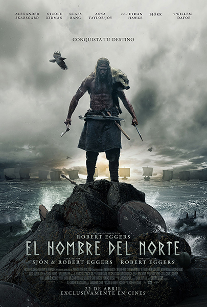

Estos son los estrenos que han logrado Sala Llena en las últimas semanas.
Dirigida por Matt Reeves y protagonizada por Robert Pattinson la nueva película de Batman llegará a los cines en México el próximo 3 de marzo de 2022 y tendrá una duración de dos horas y 55 minutos.
“Dos años acechando las calles como Batman, infundiendo el miedo en los corazones de los criminales, han llevado a Bruce Wayne a lo más profundo de las sombras de Gotham City. Con solo unos pocos aliados de confianza -Alfred Pennyworth y el teniente James Gordon- entre la corrupta red de funcionarios y personajes de alto nivel de la ciudad, el solitario justiciero se ha establecido como la única encarnación de la venganza entre sus conciudadanos.
Cuando un asesino se dirige a la élite de Gotham con una serie de maquinaciones sádicas, un rastro de pistas crípticas envía al mejor detective del mundo a una investigación en los bajos fondos donde se encuentra con personajes como Selina Kyle/aka Catwoman, Oswald Cobblepot/aka el Pingüino, Carmine Falcone y Edward Nashton/aka Enigma. A medida que las pruebas comienzan a acercarse a su casa y se hace evidente la magnitud de los planes del autor, Batman debe forjar nuevas relaciones, desenmascarar al culpable y hacer justicia al abuso de poder y la corrupción que durante mucho tiempo han asolado Gotham City”.
Dirigida por Pablo Larraín y protagonizada por Kristen Stewart llegará a los cines el próximo 13 de enero de 2022 y tendrá una duración de una hora con 51 minutos.
Son solo un par de días en torno a la Navidad en el castillo de Sandringham, en Norfolk. Diana Spencer (Lady Di) debería disfrutar de las fiestas con su familia y, sin embargo, la vemos sola, triste, amargada y asfixiada por la etiqueta. Está claro que ella no está en su lugar, es un elemento extraño, incomprendido. Sufre y no tiene donde acudir. Está obligada a representar una comedia todo el tiempo porque todo el tiempo es observada.
Spencer es una película muy bella, la fotografía es magnífica y también lo fotografiado: palacios, salones, gente elegante… Kristen Stewart realiza, probablemente, su mejor trabajo hasta la fecha y crea una gran composición de la princesa. Las melodías refuerzan las imágenes creando una corriente de simpatía por la trágica suerte de la princesa. Lo que no significa que lo que cuenta sea lo que ocurrió. Se trata de “una fábula sobre una tragedia real”, una película “basada en hechos reales”.
Dirigida por David Yetes y protagonizada por Eddie Redmayne, Jude Law, Mads Mikkelsen, por mencionar algunos, llega a los cines este 14 de abril.
La tercera entrega de la saga Animales Fantástaicos titulada: Animales Fantásticos: Los Secretos de Dumbledore el malvado y poderoso mago Grindelwald sigue buscando adeptos a su causa, pero esta vez se transportará a todos los rincones y mundos mágicos existentes para obtener lo que quiere. Por otra parte, Dumbledore unirá a su propio ejército formado por Newt y Theseus Scamander, Jacob, entre otros, para poner fin a la guerra que está a punto de comenzar Grindelwald en su nombre.
Mientras encuentran aliados y la manera de poner fin a esta oscura edad, el pasado de Dumbledore irá cada vez tomando más presencia en la historia entre él y su antiguo amigo Grindelwald, con quien le unen otros grandes lazos más allá de la enemistad.
Dirigida por Robert EggersCon y con un elenco digno de premiaciones como Anya Taylor, Nicole Kidman, Björk, Alexander Skasgärd, entre otros. Llega este 14 de abril a todas las salas la nueva película “El hombre del norte”.

El homre del norte es una próxima película de suspenso y drama histórico épico estadounidense-británica, con un guion coescrito por el poeta y novelista islandés Sjón. Con su historia ambientada a principios del siglo x en Islandia, estará protagonizada por Alexander Skarsgård como el príncipe vikingo Amleth, junto a Nicole Kidman, Anya Taylor-Joy, Björk, Ralph Ineson, Ethan Hawke y Willem Dafoe. La trama seguirá al personaje de Amleth, quien emprende una misión vengativa después del asesinato de su padre.